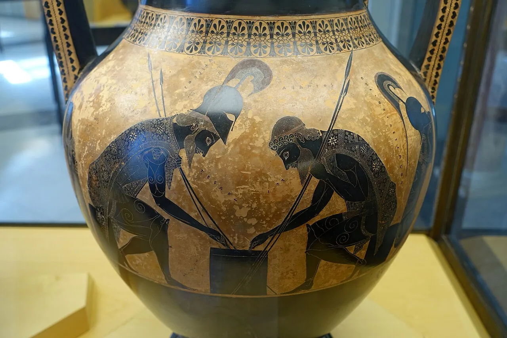

Kısa cevap: Bu yazıda “Helen dönemi” derken Antik Yunan dünyasının Arkaik ve Klasik çağlarını kastediyoruz. Yaygın bir yaklaşık çerçeve MÖ 8. yüzyıldan Büyük İskender'in ölüm yılı olan MÖ 323'e uzanır. Bu dönem, tek bir imparatorluğun kesintisiz tarihi değil; farklı siyasal düzenlere sahip polislerin, kolonilerin, düşünce çevrelerinin ve gündelik yaşamların tarihidir.
Helen dönemi hangi yılları kapsar?
Arkaik dönem yaklaşık MÖ 800–480; Klasik dönem ise yaklaşık MÖ 480/478–323 olarak ele alınır. Bu dönemlendirmeler tarihçilerin kullandığı pratik sınırlar; antik insanların hayatında takvim yaprağı gibi kesin kopuşlar değildi. “Helenistik Dönem” farklı bir terimdir: çoğu anlatımda MÖ 323'te İskender'in ölümünden sonra başlayan ve Yunan dili ile kültürünün daha geniş bir alana yayıldığı dönemi ifade eder. Burada ağırlıkla Arkaik ve Klasik Helen dünyasına bakıyoruz.[1][2]
Bu çerçeve, Miken saraylarının MÖ 2. binyıldaki tarihini veya bütün Akdeniz toplumlarını kapsamaz. Yunan dünyası da bugünkü anlamıyla birleşik bir ulus-devlet değildi: siyasal bağlılık çoğunlukla kendi toprağı, yasaları ve kurumları olan kente, yani polis'e yönelirdi.
Bir ülke değil, kentler ve bağlantılar dünyası
Atina, Sparta, Korinthos, Thebai ve Miletos gibi polisler ortak dil ve dinsel geleneklerin yanında farklı yönetim biçimleri, çıkarlar ve askerî güçler geliştirdi. Bazıları yurttaş meclisleriyle, bazıları dar seçkin grupların veya kralların ağırlığıyla yönetildi. Atina'nın demokrasisi bütün Yunan kentlerinde aynı şekilde uygulanmadı; Sparta'nın toplumsal ve askerî düzeni de diğer polisler için genel bir model değildi.
Arkaik çağda Akdeniz ve Karadeniz kıyılarında yeni Yunan yerleşimleri kuruldu; ticaret, göç ve kültürel temas arttı. “Koloni” diye çevrilen bu yerleşimler her zaman bir merkez devletin uzaktaki vilayeti değildi: pek çoğu kendi kurumlarına sahipti ve ilişkilerin niteliği yerden yere değişiyordu. Yunan dünyasının gelişimini yalnızca Avrupa anakarasıyla sınırlamamak, Ege adalarını, Anadolu kıyılarını ve Karadeniz çevresini de hesaba katmak gerekir.[1]
Polislerde yönetim ve yurttaşlık, kimlerin karar süreçlerine katılabildiği sorusunu da belirliyordu. Klasik Atina'da yetişkin erkek yurttaşlar halk meclisine katılabiliyordu; kadınlar, köleleştirilmiş insanlar ve kentte yaşayan yabancılar bu yurttaşlık haklarına sahip değildi. Bu nedenle Atina deneyimi önemli bir doğrudan katılım örneği olsa da bugünkü eşit yurttaşlıkla aynı şey değildir. Ayrıntılar için Atina demokrasisi yazımıza bakabilirsiniz.[2]
Pers savaşları, iç çatışmalar ve Makedonya
Pers İmparatorluğu ile savaşlar, Yunan kentlerinin ortak hareket ettiği anları da aralarındaki rekabeti de görünür kıldı. Ardından Atina ile Sparta arasındaki Peloponez Savaşı, birçok polis ve müttefikini içine alan uzun bir çatışmaya dönüştü. Bu mücadeleleri yalnızca “özgür Yunanistan ile Doğu” karşıtlığına indirgemek yanıltıcıdır: ittifaklar değişti, yerel çıkarlar belirleyici oldu ve savaşın yükünü sıradan insanlar taşıdı.[2]
Makedonya'nın yükselişi polisler arasındaki güç dengesini değiştirdi. II. Philippos'un MÖ 338'deki Khaironeia zaferi, Yunan kentleri üzerindeki Makedonya ağırlığını pekiştirdi. Oğlu Büyük İskender'in seferleri Yunan kültürünü Mısır'dan Orta Asya'ya uzanan bir coğrafyayla buluşturdu; fakat bu seferler aynı zamanda fetih, zorunlu yönetim ve savaş demekti. İskender'in MÖ 323'te ölümüyle başlayan ve burada anlatılan Helen/klasik dönemden ayrılan Helenistik çağın krallıklarını ve gündelik yaşamını ayrı yazımızda inceliyoruz.[2]
Felsefe, tiyatro ve araştırma
Helen dünyasının düşünsel hayatı tek başına Atina'da doğmadı. Anadolu kıyılarındaki İyonya kentlerinde yaşayan erken düşünürler doğa olaylarını akıl yürütmeyle açıklamaya çalıştı; sonraki yüzyıllarda Sokrates, Platon ve Aristoteles farklı sorular ve yöntemlerle felsefeyi geliştirdi. Bu kişiler aynı dönemde yaşamadı ve görüşleri tek bir “Yunan düşüncesi” altında birleştirilemez. İyonya'dan başlayan çizgi için ilk filozoflar yazımızı okuyabilirsiniz.[3]
Tiyatro, şiir, heykel ve mimari de kamusal hayatın parçalarıydı. Atina'daki tragedya ve komedya yarışmaları dinsel festivaller içinde düzenlenirken, tapınaklar ve kutsal alanlar farklı polislerin ortak ve yerel bağlılıklarını yansıtıyordu. Bugün müzelerde görülen vazolar ise yalnızca “güzel eşya” değil; mitleri, savaşçıları, şölenleri, gündelik nesneleri ve zanaatkârların becerisini gösteren arkeolojik kaynaklardır. Buradaki amphora da dönemin sanatçısı Exekias'ın imzasını taşıyan gerçek bir eserin fotoğrafıdır.
Sofra, emek ve toplumsal sınırlar
Birçok toplulukta tahıl—özellikle arpa ve buğday—zeytin, üzüm, baklagiller ve yerel ürünler beslenmenin temel parçalarıydı. Kıyı bölgelerinde balık önem kazanabiliyor; etin tüketimi ise gelir, bölge, mevsim ve dinsel törenlere göre değişebiliyordu. “Antik Yunan sofrası” her evde aynı yemeklerin bulunduğu tek tip bir düzen değildi; sınıf, kent ve coğrafya belirleyiciydi.[1]
Tarım, zanaat, deniz ticareti ve ev içi emek gündelik hayatın temelini oluşturuyordu. Kölelik Yunan toplumlarının önemli bir parçasıydı; köleleştirilmiş insanların hukuki ve kişisel özgürlüğü yoktu, yaptıkları işler ve yaşadıkları koşullar değişse de bu sistemi “demokrasi” anlatısının dışında bırakamayız. Kadınların kamusal ve hukuki konumu da kentten kente farklılık gösteriyordu; erkek yurttaşların siyasal katılımı, toplumun tamamının eşit söz hakkına sahip olduğu anlamına gelmiyordu.[2]
Antik metinlerin çoğu eğitimli ve varlıklı erkekler tarafından yazıldı. Bu yüzden gündelik hayatı anlamak için yazılı anlatıları arkeolojik bulgular, ev eşyaları, mezarlar, seramikler ve yerleşim izleriyle birlikte okumak gerekir. Kaynakların neyi gösterdiği kadar, kimlerin sesini taşımadığı da tarihsel yorumun parçasıdır.
Helen dünyasının mirası ve sınırları
Yunan felsefesi, tiyatrosu, sanatı ve siyasal düşüncesi sonraki toplumları etkiledi; bu aktarım Roma, Orta Çağ, İslam dünyası ve modern Avrupa üzerinden farklı biçimlerde gerçekleşti. Ancak “Batı uygarlığı her şeyi Antik Yunan'dan aldı” gibi tek yönlü bir anlatı eksiktir. Yunan kentleri de Mısır, Levant, Anadolu ve Mezopotamya toplumlarıyla ticaret, savaş ve bilgi alışverişi içindeydi; fikirler sınırlar arasında dolaşırken değişiyordu.
Helen dünyasını anlamak, onu ne kusursuz bir demokrasi modeli ne de yalnızca geçmişten kalma anıtlar olarak görmek demektir. Kentlerin deneyleri, düşünürlerin soruları ve sanatçıların eserleri kadar; yurttaşlığın dar sınırları, köle emeği, savaş ve kadınların farklı konumları da bu tarihin içindedir. Daha geniş Akdeniz çerçevesi için İlk Çağ yazımıza, Atina'daki yönetim deneyimi için demokrasi rehberimize geçebilirsiniz.
Kaynaklar ve görsel bilgisi
- Robin Osborne, Greece in the Making 1200–479 BC, 2. basım, Routledge, 2009. Yayınevi DOI kaydı.
- P. J. Rhodes, A History of the Classical Greek World, 478–323 BC, Blackwell Publishing, 2006. Dönemin siyasal tarihi ve kaynakları için akademik çalışma.
- Andrea Falcon, “Presocratic Philosophy,” Stanford Encyclopedia of Philosophy. Hakemli başvuru maddesi; ayrıca İyonya filozofları yazımız.
- Aristoteles'e atfedilen Atinalıların Anayasası ve Thukydides'in Peloponez Savaşı, antik döneme ait birincil kaynaklardır. Metinler, yazıldıkları siyasal bağlam ve temsil etmedikleri gruplar dikkate alınarak okunmalıdır. Atina demokrasisi yazısında ilgili bölümlere ve kaynaklara ulaşabilirsiniz.
- Exekias imzalı, MÖ 540–530 dolaylarına tarihlenen Attika siyah figürlü amphoradan fotoğraf ayrıntısı. Eser no. 16757, Museo Gregoriano Etrusco, Vatikan Müzeleri. Fotoğraf: Daderot / Wikimedia Commons; dosya Public Domain/CC0 olarak işaretlenmiştir: eser ve lisans kaydı.
MÖ 800–323, burada Arkaik ve Klasik Helen dünyası için kullanılan yaklaşık bir çerçevedir; Helenistik dönem MÖ 323 sonrasında başlar. Tarihsel dönemlendirmeler bölgeye ve araştırmacının kullandığı ölçüte göre değişebilir.